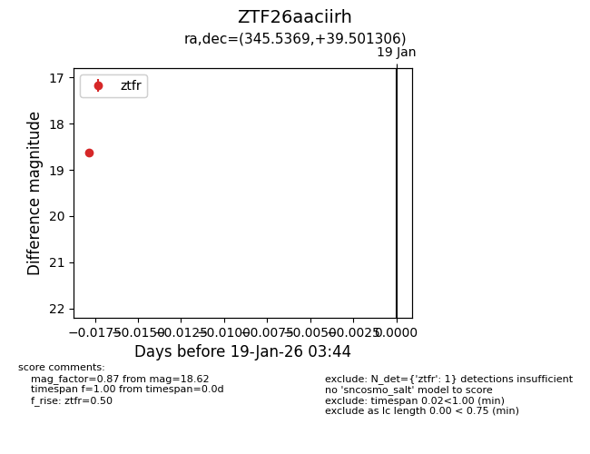
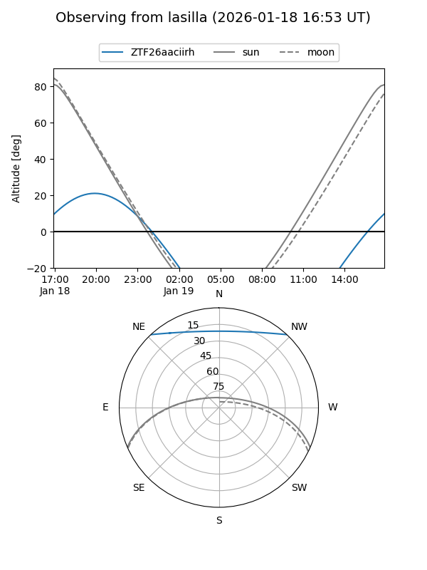
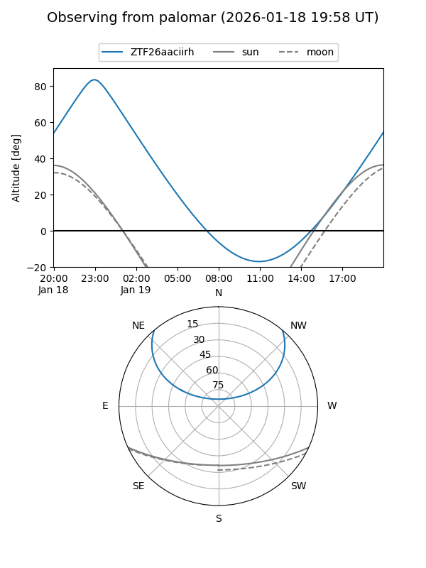

ZTF26aaciirh
Target ZTF26aaciirh at 2026-01-19 03:45
Aliases and brokers:
FINK: link
Lasair: link
ALeRCE: link
alt names
ZTF26aaciirh (ztf,fink_ztf)
Coordinates:
equatorial (ra, dec) = 345.5369,+39.50131
equatorial (HMS+DMS) = 23:02:08.87,+39:30:04.70
galactic (l, b) = (100.9797,-18.66663)
Flags:
Photometry:
last ztfr=18.62
1 ztfr detections
Lightcurve

Visibility


Additional plots